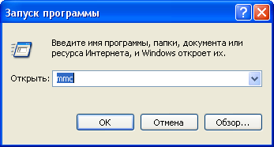
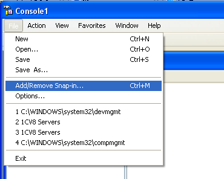
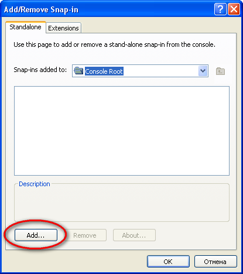
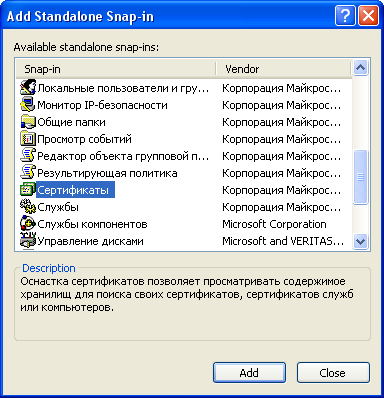
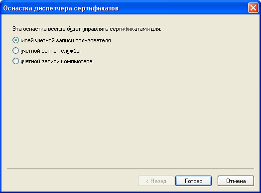
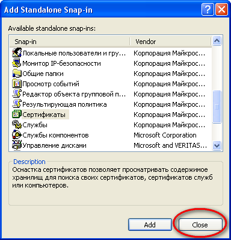
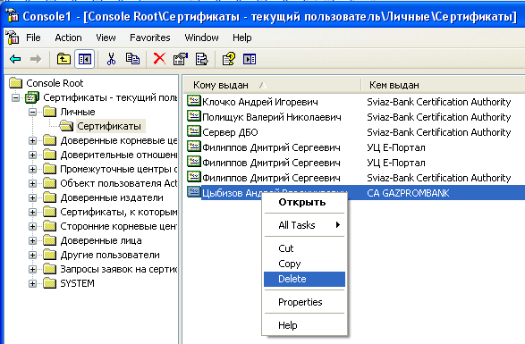

запускаем Консоль MMC (Microsoft Management Console)

в меню выбираем добавление оснастки:





Заходим в "Личные"
Находим там свой сертификат и удаляем его:

Также настоятельно рекомендуется перед началом использования нового Рутокена удалить запомненные пароли: